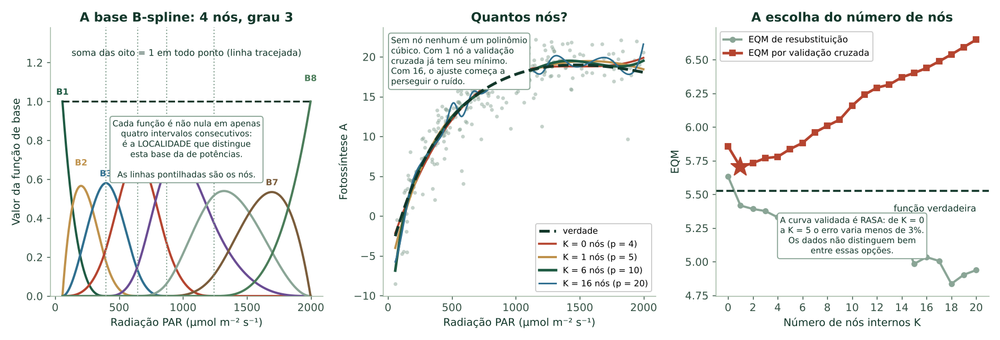
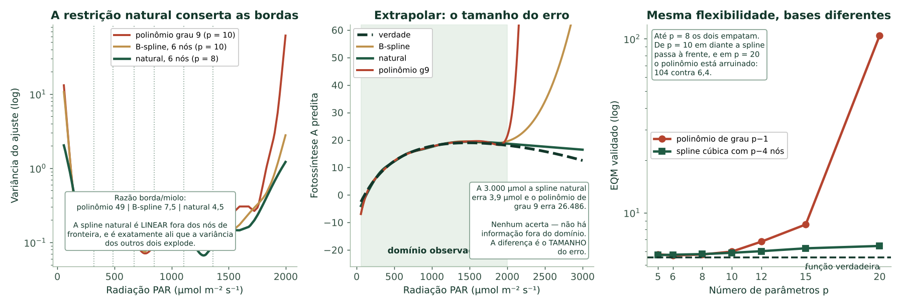

Splines de regressão
Emenda polinômios cúbicos de grau baixo em pedaços do domínio — a base local que resolve a oscilação, a explosão nas bordas e a extrapolação do polinômio global.
Comece por aqui
A ficha anterior terminou com um diagnóstico: o polinômio é uma função global, de modo que precisa de muitos termos para acompanhar uma curva que muda de regime — e com muitos termos oscila, explode nas bordas e propaga perturbações locais. A spline resolve isso pela raiz: em vez de uma função para todo o domínio, usa polinômios de grau baixo emendados, cada um responsável por um pedaço.
O que muda é a base: em vez de \(1,x,x^2,\dots\), usam-se funções que valem zero fora de um pedaço do domínio. O que não muda é tudo o mais: a spline de regressão continua sendo um modelo linear nos parâmetros, ajustado por mínimos quadrados, com lm, summary, anova e predict funcionando como sempre. Só a matriz \(X\) é outra.
O que é uma spline
Uma spline de grau \(g\) com nós \(\kappa_1<\dots<\kappa_K\) é uma função que, em cada intervalo entre nós, é um polinômio de grau \(g\), e que nos nós é contínua junto com as \(g-1\) primeiras derivadas. Para \(g=3\) — a escolha padrão — isso significa que a função, a inclinação e a curvatura são contínuas em cada emenda: o olho não vê a junção.

A contabilidade dos graus de liberdade
Sem nenhuma restrição, \(K+1\) pedaços de grau \(g\) teriam \((K+1)(g+1)\) parâmetros. As \(g\) restrições de continuidade em cada um dos \(K\) nós retiram \(gK\). Sobram:
| Grau | K | Sem restrição | Restrições | Sobram | Posto de B |
|---|---|---|---|---|---|
| 1 | 4 | 10 | 4 | 6 | 6 |
| 2 | 4 | 15 | 8 | 7 | 7 |
| 3 | 4 | 20 | 12 | 8 | 8 |
| 3 | 8 | 36 | 24 | 12 | 12 |
| 3 | 12 | 52 | 36 | 16 | 16 |
Pressupostos e como verificá-los
| Pressuposto | Por que importa | Como verificar |
|---|---|---|
| Os do modelo linear | A spline de regressão É um modelo linear. | Resíduos: normalidade, homocedasticidade, independência. |
| Base B-spline no ajuste | A de potências truncadas é mal condicionada. | bs() ou ns(), nunca (x-k)_+^3 à mão. |
| Nós e K escolhidos por validação | Resubstituição sempre pede mais nós. | Validação cruzada; veja a tabela desta ficha. |
| Nós dentro do domínio, com dados em volta | Um nó em região vazia deixa o ajuste indeterminado. | Nós nos quantis, não igualmente espaçados. |
| Nós fixados antes, ou a escolha validada | Escolher nós olhando y é seleção. | Validação cruzada ANINHADA; veja stepwise. |
| Nenhuma extrapolação | Fora dos nós de fronteira não há informação. | Com ns() o erro é controlado; com bs(), não. |
| Bordas examinadas | É onde a variância se concentra. | Banda de confiança ao longo de todo o domínio. |
| Nós guardados para prever | bs() recalcula quantis em novos dados. | Passe knots e Boundary.knots explicitamente. |
Se a fórmula for A ~ bs(par, df = 8), o R calcula os nós a partir dos quantis dos dados fornecidos. Ao chamar predict com um newdata menor ou de distribuição diferente, os nós podem ser recalculados e a predição sai errada sem nenhum aviso. O lm guarda os nós no objeto e normalmente protege contra isso, mas qualquer manipulação manual da matriz de base perde essa proteção. A forma segura é construir os nós uma vez e passá-los explicitamente, como no código desta ficha.
Formulação e cálculo
O modelo é \(y_i=\sum_{j=1}^{K+g+1}\beta_jB_j(x_i)+\varepsilon_i\), em que \(B_j\) são as funções da base. Duas bases geram o mesmo espaço:
Potências truncadas
É a base mais fácil de entender — cada termo novo acrescenta curvatura a partir de um nó — e a pior de usar: cada função é não nula em todo o domínio à direita do nó.
B-splines
Definidas pela recorrência de Cox-de Boor, com \(B_{i,0}(x)=\mathbb{1}\{t_i\le x<t_{i+1}\}\):
Em que:
- \(t_i\)
- sequência de nós estendida, com \(g+1\) repetições nas fronteiras
- \(d\)
- grau corrente da recorrência
- \(B_{i,d}\)
- a \(i\)-ésima B-spline de grau \(d\)
Duas propriedades decorrem: cada \(B_{i,g}\) é não nula em apenas \(g+2\) intervalos consecutivos (localidade), e \(\sum_iB_{i,g}(x)=1\) para todo \(x\) (partição da unidade).
Exemplo numérico, passo a passo
| K | cond(X) potências truncadas | cond(X) B-spline | Maior |diferença| no ajuste |
|---|---|---|---|
| 2 | 2,58 × 10¹⁰ | 7,04 | 1,47 × 10⁻⁷ |
| 4 | 4,70 × 10¹⁰ | 6,79 | 1,46 × 10⁻⁷ |
| 6 | 6,80 × 10¹⁰ | 6,25 | 2,74 × 10⁻⁷ |
| 10 | 1,30 × 10¹¹ | 6,18 | 1,08 × 10⁻⁷ |
| 16 | 2,49 × 10¹¹ | 5,79 | 1,43 × 10⁻⁷ |
| 24 | 6,25 × 10¹¹ | 6,68 | 1,38 × 10⁻⁶ |
Aqui as duas bases concordam: a maior diferença é da ordem de \(10^{-7}\) μmol, desprezível. Na ficha polinomial, a base crua deixou de funcionar a partir do grau 4, com discrepâncias de 5 a 16 μmol. A diferença entre os dois casos é instrutiva.
A base de potências truncadas tem condicionamento de \(10^{11}\), ruim mas ainda dentro dos 16 dígitos da precisão dupla — sobram uns cinco. A base de potências puras do polinômio chegava a \(10^{27}\), muito além. Dito de outro modo: a objeção à base truncada não é que ela quebre com estes dados, é a margem. Com \(K\) maior, com \(x\) de escala maior, ou com dados mais desbalanceados, a margem acaba.
A razão positiva para preferir B-splines é a localidade. Com \(K=6\) nós e grau 3, as dez funções da base cobrem faixas estreitas:
| Função | De | Até |
|---|---|---|
| B1 | 57 | 312 |
| B2 | 70 | 483 |
| B3 | 70 | 669 |
| B4 | 70 | 833 |
| B5 | 345 | 1 103 |
| B6 | 507 | 1 360 |
| B7 | 673 | 1 964 |
| B8 | 851 | 1 964 |
| B9 | 1 112 | 1 964 |
| B10 | 1 365 | 1 998 |
Propriedades
- É um modelo LINEAR nos parâmetros: toda a teoria de mínimos quadrados se aplica.
- Uma spline de grau \(g\) com \(K\) nós tem \(K+g+1\) graus de liberdade.
- Com \(K=0\) é um polinômio de grau \(g\).
- As B-splines são locais (suporte em \(g+2\) intervalos) e somam 1 em todo ponto.
- A spline natural impõe linearidade fora das fronteiras, retirando 4 g.l.
- A variância do ajuste é maior nas bordas, mas muito menos que a do polinômio.
- A escolha de \(K\) e dos nós é uma escolha de modelo: precisa ser validada.
- Em várias dimensões, o número de funções da base cresce exponencialmente.
Como interpretar os resultados
| Elemento | O que informa | Cuidado |
|---|---|---|
| Coeficientes \(\hat\beta_j\) | Altura da curva perto do nó \(j\). | Não são efeitos; não os reporte isoladamente. |
summary(m) | Ajuste global, R², F. | Os p dos coeficientes não têm uso prático. |
anova(m1, m2) | Compara modelos aninhados. | Válido se os nós foram fixados antes. |
| Erro validado por K | A curva de escolha. | Costuma ser muito RASA; veja abaixo. |
| Gráfico com banda | A forma e a incerteza. | É o que se publica. |
| Posição dos nós | Onde a curva pode dobrar. | Marque-os no gráfico. |
ns() contra bs() | Se há restrição de fronteira. | ns para prever perto das bordas. |
A curva de escolha é rasa, e isso é informação
Nestes dados o erro validado vai de 5,8564 com \(K=0\) a 5,7030 com \(K=1\) e 5,7793 com \(K=4\) — uma variação de menos de 3% em toda essa faixa. Os dados simplesmente não distinguem entre um polinômio cúbico e uma spline com quatro nós. Reportar "escolhemos 1 nó, por validação cruzada" sugere uma precisão que não existe; o honesto é dizer que qualquer flexibilidade entre 4 e 8 graus de liberdade serve, e mostrar que a conclusão substantiva não muda dentro dessa faixa.
Em vez de escolher \(K\) e as posições, o bs() e o ns() aceitam df: dá-se o número de graus de liberdade e eles colocam os nós nos quantis correspondentes. ns(x, df = 5) põe 4 nós internos nos quintis. É a forma usual de usar a função e evita a aritmética de \(K+g+1\).
Como executar no R e em Python
Onde executar o código em Python
Não é preciso instalar nada: o Google Colab é um computador na nuvem, gratuito, que executa Python pelo navegador e já traz as bibliotecas usadas aqui (numpy, scipy e matplotlib).
O pacote splines acompanha o R e traz as duas funções necessárias. bs(x, knots = …, degree = 3) constrói a base B-spline; bs(x, df = k) coloca os nós nos quantis automaticamente. ns(x, …) faz o mesmo para a spline natural, com a restrição de linearidade nas fronteiras. As duas entram direto na fórmula do lm ou do glm, e todo o restante funciona como sempre.
Dois argumentos merecem atenção. Boundary.knots define o intervalo das fronteiras e, por padrão, é o intervalo dos dados — convém fixá-lo explicitamente quando se vai prever. E, ao comparar modelos, guarde os nós em uma variável e passe-os às duas fórmulas, em vez de usar df nas duas: assim se tem certeza de que os nós são os mesmos.
library(splines)
nos <- quantile(fot$par, probs = c(.2, .4, .6, .8))
m <- lm(A ~ bs(par, knots = nos), data = fot)
mn <- lm(A ~ ns(par, knots = nos), data = fot) # natural
summary(m)$r.squared
# ou, mais simples, pelos graus de liberdade:
lm(A ~ ns(par, df = 5), data = fot)
Exemplo de aplicação
Contexto dos dados
Os dados são fictícios e foram criados pelo autor: 260 medições de trocas gasosas em folhas de cafeeiro. A resposta é a fotossíntese líquida \(A\) (μmol CO₂ m⁻² s⁻¹) e as três preditoras são a radiação PAR (μmol m⁻² s⁻¹, de 57 a 1.998), a temperatura foliar (°C, de 11,3 a 38,3) e o déficit de pressão de vapor VPD (kPa, de 0,30 a 2,45). O processo gerador é conhecido: \(A=\alpha+f_1(\text{PAR})+f_2(\text{temp})+f_3(\text{VPD})+\varepsilon\), com erro de desvio-padrão 1,30. A curva de luz \(f_1\) sobe depressa, satura e cai um pouco por fotoinibição acima de 1.000 μmol; \(f_2\) tem ótimo em 27 °C; \(f_3\) é um declínio convexo. Saber as funções verdadeiras permite medir o viés de cada método — o que, em dados reais, nunca é possível. O mesmo conjunto atravessa as cinco fichas do grupo.
Código em R
# Splines de regressão: exemplo completo ----
# Pacotes: splines (bs e ns, que acompanham o R)
# Dados fictícios: 260 medições de trocas gasosas em folhas de cafeeiro.
# O arquivo fotossintese.csv acompanha o site, na pasta scripts/.
fot <- read.csv("fotossintese.csv")
str(fot) # A (umol CO2 m-2 s-1), par, temp, vpd
summary(fot)
plot(A ~ par, data = fot, pch = 16, col = "#8aa59680",
xlab = "PAR (umol m-2 s-1)", ylab = "A (umol CO2 m-2 s-1)")
# O ponto de partida: quanto o modelo LINEAR deixa na mesa
summary(lm(A ~ par + temp + vpd, data = fot))$r.squared # 0,6747
# O processo gerador verdadeiro daria R² = 0,9514. É esse buraco que o
# grupo inteiro de fichas tenta preencher.
library(splines)
# ---- 1. A CONTABILIDADE DOS GRAUS DE LIBERDADE
# Uma spline de grau g com K nós internos tem K + g + 1 funções de base
# (contando o intercepto). Confira pelo posto da matriz:
for (g in c(1, 2, 3)) for (K in c(4, 8)) {
nos <- quantile(fot$par, probs = seq(0, 1, length.out = K + 2)[-c(1, K + 2)])
B <- cbind(1, bs(fot$par, knots = nos, degree = g))
cat(sprintf("grau %d, K = %2d nos: K+g+1 = %2d | posto de B = %2d\n",
g, K, K + g + 1, qr(B)$rank))
}
# ---- 2. As funções da base, e a LOCALIDADE delas
nos <- quantile(fot$par, probs = c(.2, .4, .6, .8))
B <- bs(fot$par, knots = nos, degree = 3)
matplot(sort(fot$par), B[order(fot$par), ], type = "l", lty = 1, lwd = 2,
xlab = "PAR", ylab = "funcao de base")
# Cada funcao e nao nula em apenas g+2 = 5 intervalos consecutivos.
apply(B, 2, function(z) range(fot$par[z > 1e-12]))
# ---- 3. QUANTOS NÓS? Validação cruzada
library(boot)
set.seed(1)
for (K in 0:20) {
f <- if (K == 0) A ~ bs(par, degree = 3) else {
nos <- quantile(fot$par, probs = seq(0, 1, length.out = K + 2)[-c(1, K + 2)])
as.formula(sprintf("A ~ bs(par, knots = c(%s), degree = 3)",
paste(round(nos, 4), collapse = ", "))) }
m <- glm(f, data = fot)
cat(sprintf("K = %2d (p = %2d): EQM 10-fold %.4f\n",
K, K + 4, cv.glm(fot, m, K = 10)$delta[1]))
}
# ---- 4. ONDE PÔR OS NÓS: quantis contra espaçamento igual
for (K in c(2, 4, 6, 8, 12)) {
nq <- quantile(fot$par, probs = seq(0, 1, length.out = K + 2)[-c(1, K + 2)])
ne <- seq(min(fot$par), max(fot$par), length.out = K + 2)[-c(1, K + 2)]
fq <- as.formula(sprintf("A ~ bs(par, knots = c(%s))", paste(round(nq, 4), collapse = ", ")))
fe <- as.formula(sprintf("A ~ bs(par, knots = c(%s))", paste(round(ne, 4), collapse = ", ")))
cat(sprintf("K = %2d: quantis %.4f | igualmente espacados %.4f\n", K,
cv.glm(fot, glm(fq, data = fot), K = 10)$delta[1],
cv.glm(fot, glm(fe, data = fot), K = 10)$delta[1]))
}
# ---- 5. A SPLINE NATURAL: a restrição que conserta as bordas
# ns() e linear fora dos nos de fronteira; bs() nao e.
nos6 <- quantile(fot$par, probs = seq(0, 1, length.out = 8)[-c(1, 8)])
mb <- lm(A ~ bs(par, knots = nos6), data = fot)
mn <- lm(A ~ ns(par, knots = nos6), data = fot)
mp <- lm(A ~ poly(par, 9), data = fot)
c(bs = length(coef(mb)), ns = length(coef(mn)), poly = length(coef(mp)))
# A variancia do ajuste por regiao, por bootstrap
set.seed(11)
gx <- sort(fot$par)
vari <- function(form) {
P <- replicate(500, {
i <- sample(nrow(fot), replace = TRUE)
predict(lm(form, data = fot[i, ]), newdata = data.frame(par = gx)) })
tapply(apply(P, 1, var), cut(gx, c(0, 200, 500, 1400, 1800, 2100)), mean) }
rbind(bs = vari(A ~ bs(par, knots = nos6)),
ns = vari(A ~ ns(par, knots = nos6)),
poly = vari(A ~ poly(par, 9)))
# ---- 6. EXTRAPOLAR
nd <- data.frame(par = c(2100, 2300, 2600, 3000))
# bs() avisa e extrapola com o polinomio cubico da ultima peca;
# ns() extrapola em LINHA RETA, por construcao.
rbind(bs = predict(mb, newdata = nd), ns = predict(mn, newdata = nd),
poly = predict(mp, newdata = nd))
# ---- 7. SPLINE CONTRA POLINÔMIO, com a MESMA flexibilidade
for (p in c(5, 6, 8, 10, 12, 15, 20)) {
g <- p - 1; K <- p - 4
nos <- quantile(fot$par, probs = seq(0, 1, length.out = K + 2)[-c(1, K + 2)])
fs <- as.formula(sprintf("A ~ bs(par, knots = c(%s))", paste(round(nos, 4), collapse = ", ")))
cat(sprintf("p = %2d: polinomio %.4f | spline %.4f\n", p,
cv.glm(fot, glm(A ~ poly(par, g), data = fot), K = 10)$delta[1],
cv.glm(fot, glm(fs, data = fot), K = 10)$delta[1]))
}
A mesma análise em Python, com os resultados
Cole o código em um notebook do Google Colab ↗ e execute com Shift+Enter. Os valores abaixo são a saída desse código.
import numpy as np
# ------------------------------------------------------------------
# Bloco comum às fichas deste grupo: funções auxiliares e dados (cab15)
# ------------------------------------------------------------------
import numpy as np
# ------------------------------------------------------------------
# Bloco comum às fichas deste grupo: funções auxiliares e dados (dados15)
# ------------------------------------------------------------------
import numpy as np
import pandas as pd
def le_csv(nome):
"""Lê o arquivo de dados da ficha: primeiro na pasta atual; se não
estiver lá (por exemplo, no Google Colab), direto do site."""
try:
return pd.read_csv(nome)
except FileNotFoundError:
return pd.read_csv('https://cassiushenrique.github.io/ModelosEstatisticos/scripts/' + nome)
# Dados fictícios: 260 medições de trocas gasosas (arquivo fotossintese.csv)
fot = le_csv('fotossintese.csv')
PAR=fot['par'].to_numpy(float); TEMP=fot['temp'].to_numpy(float)
VPD=fot['vpd'].to_numpy(float); A=fot['A'].to_numpy(float)
NG=len(A)
SIG=1.30
INT=14.0
def f_par(x):
x=np.asarray(x,float)
return 26.0*(1-np.exp(-0.0024*x))-1.9e-6*np.maximum(x-1000,0)**2
def f_temp(t): t=np.asarray(t,float); return -0.042*(t-27.0)**2
def f_vpd(v): v=np.asarray(v,float); return -2.9*v+0.33*v**2
C1=19.9605909253; C2=-1.4311050277; C3=-2.0245067433
def verdade(x,t,v): return INT+(f_par(x)-C1)+(f_temp(t)-C2)+(f_vpd(v)-C3)
# ------------------------------------------------------------------ fim do bloco comum
# ------------------------------------------------------------------ utilidades
def c(v, d=4): return ('%.*f' % (d, v)).replace('.', ',')
def eqm(o, p): return float(np.mean((np.asarray(o) - np.asarray(p))**2))
def sqr(o, p): return float(np.sum((np.asarray(o) - np.asarray(p))**2))
def r2(o, p): return 1 - sqr(o, p)/float(np.sum((np.asarray(o) - np.mean(o))**2))
def dobras(n, k, seed):
rg = np.random.default_rng(seed)
d = np.tile(np.arange(k), int(np.ceil(n/k)))[:n]; rg.shuffle(d); return d
def cv_uni(ajusta, x, y, k=10, seed=0, reps=1):
"""EQM por validação cruzada para um suavizador univariado.
ajusta(xtr, ytr, xte) -> predições em xte."""
tot = []
for r in range(reps):
d = dobras(len(y), k, seed + 991*r); e = np.empty(len(y))
for j in range(k):
tr, te = d != j, d == j
e[te] = y[te] - ajusta(x[tr], y[tr], x[te])
tot.append(float(np.mean(e**2)))
return float(np.mean(tot)), (float(np.std(tot, ddof=1)) if reps > 1 else 0.0)
# ------------------------------------------------------------------ polinômios
def poli(x, g, xr=None):
"""Base polinomial ORTOGONAL (Legendre reescalada ao intervalo de xr)."""
x = np.asarray(x, float); xr = x if xr is None else np.asarray(xr, float)
a, b = xr.min(), xr.max()
z = 2*(x - a)/(b - a) - 1
return np.polynomial.legendre.legvander(z, g)
def poli_cru(x, g):
x = np.asarray(x, float)
return np.column_stack([x**j for j in range(g+1)])
# ------------------------------------------------------------------ B-splines
def bspline(x, nos, grau=3):
"""Base B-spline por Cox-de Boor. 'nos' = vetor de nós INTERNOS."""
x = np.asarray(x, float); nos = np.asarray(nos, float)
a, b = bspline.lim
t = np.concatenate([[a]*(grau+1), nos, [b]*(grau+1)])
m = len(t) - grau - 1
B = np.zeros((len(x), m))
for i in range(m):
B[:, i] = (x >= t[i]) & (x < t[i+1])
B[np.isclose(x, b), m-1] = 1.0
for d in range(1, grau+1):
Bn = np.zeros((len(x), len(t) - d - 1))
for i in range(Bn.shape[1]):
den1 = t[i+d] - t[i]; den2 = t[i+d+1] - t[i+1]
a1 = (x - t[i])/den1*B[:, i] if den1 > 0 else 0.0
a2 = (t[i+d+1] - x)/den2*B[:, i+1] if den2 > 0 else 0.0
Bn[:, i] = a1 + a2
B = Bn
return B
def base_bs(x, nos, grau=3, lim=None):
bspline.lim = lim if lim is not None else (float(np.min(x)), float(np.max(x)))
return bspline(x, nos, grau)
def trunc_pot(x, nos, grau=3):
"""Base de potências truncadas: 1, x, ..., x^g, (x-k)_+^g."""
x = np.asarray(x, float)
cols = [x**j for j in range(grau+1)]
for k in np.asarray(nos, float):
cols.append(np.maximum(x - k, 0.0)**grau)
return np.column_stack(cols)
def natural_cs(x, nos, lim):
"""Base de spline cúbica NATURAL (linear fora dos nós de fronteira)."""
x = np.asarray(x, float); K = np.concatenate([[lim[0]], np.asarray(nos, float), [lim[1]]])
k = len(K)
def d(j):
return (np.maximum(x - K[j], 0)**3 - np.maximum(x - K[k-1], 0)**3)/(K[k-1] - K[j])
cols = [np.ones_like(x), x] + [d(j) - d(k-2) for j in range(k-2)]
return np.column_stack(cols)
def ajusta_base(B, y):
return np.linalg.lstsq(B, y, rcond=None)[0]
# --------------------------------------------------- spline de suavização
def suav_spline(x, y, lam, escala=True):
"""Spline cúbica de suavização EXATA, pelo algoritmo de Reinsch
(Green e Silverman, 1994, cap. 2). Resolve o sistema BANDADO
(R + lam Q' W^-1 Q) gama = Q' ybar , ajustado = ybar - lam W^-1 Q gama
que é numericamente muito mais estável que inverter (W + lam K).
Com escala=True, x é levado a [0, 1] antes de penalizar, de modo que lambda
tenha o mesmo significado para variáveis de unidades diferentes — é o que o
smooth.spline faz por trás do argumento spar.
Devolve (ajustados, x únicos na escala original, contagens, médias, g.l. efetivos)."""
x = np.asarray(x, float); y = np.asarray(y, float)
a0, b0 = (x.min(), x.max()) if escala else (0.0, 1.0)
xs = (x - a0)/(b0 - a0) if escala else x
xo_s, inv = np.unique(np.round(xs, 12), return_inverse=True)
m = len(xo_s)
xo = xo_s*(b0 - a0) + a0 if escala else xo_s
cont = np.bincount(inv, minlength=m).astype(float)
ybar = np.bincount(inv, weights=y, minlength=m)/cont
h = np.diff(xo_s)
Q = np.zeros((m, m-2)); R = np.zeros((m-2, m-2))
for j in range(1, m-1):
Q[j-1, j-1] = 1/h[j-1]; Q[j, j-1] = -1/h[j-1] - 1/h[j]; Q[j+1, j-1] = 1/h[j]
R[j-1, j-1] = (h[j-1] + h[j])/3
if j < m-2:
R[j-1, j] = h[j]/6; R[j, j-1] = h[j]/6
Winv = 1.0/cont
M = R + lam*(Q.T*Winv) @ Q
gama = np.linalg.solve(M, Q.T @ ybar)
aj = ybar - lam*Winv*(Q @ gama)
# g.l. efetivos = tr(S) = m - lam * tr( W^-1 Q M^-1 Q' )
tr = m - lam*float(np.sum(Winv*np.einsum('ij,ji->i', Q, np.linalg.solve(M, Q.T))))
return aj, xo, cont, ybar, tr
def ss_edf(x, lam):
return suav_spline(x, np.zeros(len(x)), lam)[4]
def ss_gcv(x, y, lam):
aj, xo, cont, ybar, tr = suav_spline(x, y, lam)
n = len(y)
res = np.asarray(y, float) - np.interp(x, xo, aj)
return float(np.sum(res**2)/n)/((1 - tr/n)**2), tr
def ss_prev(x, y, lam, xnovo):
aj, xo, cont, ybar, tr = suav_spline(x, y, lam)
# extrapolação LINEAR fora do domínio, como manda a spline natural
d0 = (aj[1]-aj[0])/(xo[1]-xo[0]); d1 = (aj[-1]-aj[-2])/(xo[-1]-xo[-2])
xn = np.asarray(xnovo, float); out = np.interp(xn, xo, aj)
out = np.where(xn < xo[0], aj[0] + d0*(xn - xo[0]), out)
out = np.where(xn > xo[-1], aj[-1] + d1*(xn - xo[-1]), out)
return out
# ------------------------------------------------------------------ LOESS
def tricubo(u): return (1 - np.abs(u)**3)**3
def loess(x, y, xnovo, span=0.35, grau=1, iteracoes=0):
"""Regressão local ponderada (Cleveland, 1979).
iteracoes > 0 ativa a reponderação robusta bisquare: os pesos de robustez
são sempre calculados a partir dos resíduos NOS PONTOS DE AJUSTE x, e não
nos pontos onde se quer prever."""
x = np.asarray(x, float); y = np.asarray(y, float); xn = np.asarray(xnovo, float)
n = len(x); q = max(grau + 2, int(np.ceil(span*n)))
def ajusta_em(alvos, rob):
out = np.empty(len(alvos))
for i, x0 in enumerate(alvos):
dd = np.abs(x - x0); ord_ = np.argsort(dd); viz = ord_[:q]
dmax = dd[viz[-1]]
w = tricubo(dd[viz]/dmax) if dmax > 0 else np.ones(q)
w = w*rob[viz]
Z = np.column_stack([(x[viz] - x0)**j for j in range(grau+1)])
WZ = Z*w[:, None]
try: b = np.linalg.solve(Z.T @ WZ, WZ.T @ y[viz])
except np.linalg.LinAlgError: b = np.linalg.lstsq(Z.T @ WZ, WZ.T @ y[viz], rcond=None)[0]
out[i] = b[0]
return out
rob = np.ones(n)
for _ in range(iteracoes):
aj = ajusta_em(x, rob) # SEMPRE nos x de ajuste
res = y - aj
s = np.median(np.abs(res))
rob = np.clip(1 - (res/(6*s))**2, 0, None)**2 if s > 0 else np.ones(n)
return ajusta_em(xn, rob)
def loess_edf(x, span=0.35, grau=1):
"""Graus de liberdade efetivos: traço da matriz suavizadora."""
x = np.asarray(x, float); n = len(x); q = max(grau + 2, int(np.ceil(span*n)))
tr = 0.0
for i, x0 in enumerate(x):
dd = np.abs(x - x0); ord_ = np.argsort(dd); viz = ord_[:q]
dmax = dd[viz[-1]]
w = tricubo(dd[viz]/dmax) if dmax > 0 else np.ones(q)
Z = np.column_stack([(x[viz] - x0)**j for j in range(grau+1)])
WZ = Z*w[:, None]
try: li = np.linalg.solve(Z.T @ WZ, WZ.T)
except np.linalg.LinAlgError: li = np.linalg.lstsq(Z.T @ WZ, WZ.T, rcond=None)[0]
k = np.where(viz == i)[0]
if len(k): tr += li[0, k[0]]
return tr
# ------------------------------------------------------------------ GAM
def gam_backfit(Xs, y, suav, it=60, tol=1e-9):
"""Retroajuste (backfitting) de Hastie e Tibshirani.
Xs: lista de vetores; suav[j](x, r) -> parcela ajustada, centrada."""
y = np.asarray(y, float); p = len(Xs)
f = [np.zeros(len(y)) for _ in range(p)]; a0 = y.mean()
for _ in range(it):
maxd = 0.0
for j in range(p):
r = y - a0 - sum(f[k] for k in range(p) if k != j)
nv = suav[j](Xs[j], r); nv = nv - nv.mean()
maxd = max(maxd, float(np.max(np.abs(nv - f[j])))); f[j] = nv
if maxd < tol: break
return a0, f
# ------------------------------------------------------------------ fim do bloco comum
x=PAR.copy(); y=A.copy(); LIM=(float(x.min()),float(x.max()))
print('Os mesmos 260 pontos de trocas gasosas da ficha polinomial: a resposta')
print('da fotossíntese A à radiação PAR. A curva sobe depressa, satura e cai um')
print('pouco por fotoinibição — curvaturas MUITO diferentes em regiões diferentes.')
print()
print(' n = %d | PAR de %s a %s | r(PAR, A) = %s'%(NG,c(x.min(),0),c(x.max(),0),c(float(np.corrcoef(x,y)[0,1]))))
print('\n'+'='*70)
print('A CONTABILIDADE DOS GRAUS DE LIBERDADE')
print('Uma spline de grau g com K nós internos, SEM restrições, teria')
print('(K+1)(g+1) parâmetros. As restrições de continuidade da função e das')
print('g-1 primeiras derivadas em cada nó tiram g*K deles.')
print()
print('%8s %6s %16s %16s %10s %12s'%('grau','K','sem restrição','restrições','sobram','posto de B'))
for g,K in [(1,4),(2,4),(3,4),(3,8),(3,12)]:
nos=np.percentile(x,np.linspace(0,100,K+2)[1:-1])
B=base_bs(x,nos,g,LIM)
print('%8d %6d %16d %16d %10d %12d'%(g,K,(K+1)*(g+1),g*K,(K+1)*(g+1)-g*K,
int(np.linalg.matrix_rank(B))))
print()
print('A conta fecha: (K+1)(g+1) - gK = K + g + 1, que é exatamente o número de')
print('funções da base B-spline, e o posto confirma.')
print('\n'+'='*70)
print('DUAS BASES PARA O MESMO ESPAÇO: potências truncadas e B-splines')
print()
print('%6s %22s %22s %22s'%('K','cond(X) pot. truncadas','cond(X) B-spline','maior |dif| no ajuste'))
for K in [2,4,6,10,16,24]:
nos=np.percentile(x,np.linspace(0,100,K+2)[1:-1])
Bt=trunc_pot(x,nos,3); Bb=base_bs(x,nos,3,LIM)
at=Bt@ajusta_base(Bt,y); ab=Bb@ajusta_base(Bb,y)
print('%6d %22s %22s %22s'%(K,'%.2e'%np.linalg.cond(Bt),'%.2e'%np.linalg.cond(Bb),
'%.2e'%float(np.abs(at-ab).max())))
print()
print('As duas bases geram o MESMO espaço de funções, e aqui os ajustes de fato')
print('COINCIDEM: a maior diferença é da ordem de 10^-7 umol, desprezível. Vale')
print('dizer isso com clareza, porque o contraste com a ficha polinomial é')
print('instrutivo — lá a base crua DEIXOU DE FUNCIONAR a partir do grau 6.')
print()
print('A objeção à base de potências truncadas não é que ela quebre com estes')
print('dados, e sim a margem: o número de condição dela é cerca de 10^9 vezes')
print('maior (10^11 contra cerca de 6), e com 16 dígitos de precisão isso')
print('consome mais da metade deles. Com K maior, x de escala maior ou dados')
print('mais desbalanceados, a margem acaba.')
print()
print('A razão positiva para preferir B-splines é a LOCALIDADE: cada função da')
print('base é não nula em apenas g+2 intervalos consecutivos, ao passo que cada')
print('potência truncada é não nula em TODO o domínio à direita do nó.')
nos=np.percentile(x,np.linspace(0,100,8)[1:-1]); Bb=base_bs(x,nos,3,LIM)
print()
print(' largura do suporte de cada B-spline (K = 6, grau 3):')
for j in range(Bb.shape[1]):
nz=x[Bb[:,j]>1e-12]
print(' função %2d: de %s a %s'%(j+1,c(float(nz.min()),0),c(float(nz.max()),0)))
print('\n'+'='*70)
print('QUANTOS NÓS? A escolha por validação cruzada')
print()
print('%6s %8s %14s %16s'%('K','p','EQM resub','EQM 10-fold'))
res=[]
for K in range(0,21):
nos=np.percentile(x,np.linspace(0,100,K+2)[1:-1]) if K else np.array([])
def aj(xt,yt,xe,nos=nos):
return base_bs(xe,nos,3,LIM)@ajusta_base(base_bs(xt,nos,3,LIM),yt)
B=base_bs(x,nos,3,LIM); rs=eqm(y,B@ajusta_base(B,y))
cvm,_=cv_uni(aj,x,y,10,1,10)
res.append((K,K+4,rs,cvm))
if K<=12 or K%4==0: print('%6d %8d %14s %16s'%(K,K+4,c(rs),c(cvm)))
res=np.array(res); Kb=int(res[np.argmin(res[:,3]),0])
print()
print(' menor EQM validado: K = %d nós (p = %d), EQM = %s'%(Kb,Kb+4,c(res[:,3].min())))
print(' para comparar, o polinômio de grau 5 (p = 6) deu EQM validado 5,6789')
print(' e a função VERDADEIRA daria %s'%c(eqm(y,f_par(x)-f_par(x).mean()+y.mean())))
print('\n'+'='*70)
print('ONDE PÔR OS NÓS: quantis contra espaçamento igual')
print()
print('%6s %22s %22s'%('K','nós nos QUANTIS','nós IGUALMENTE espaçados'))
for K in [2,4,6,8,12]:
nq=np.percentile(x,np.linspace(0,100,K+2)[1:-1])
ne=np.linspace(LIM[0],LIM[1],K+2)[1:-1]
def ajq(xt,yt,xe,nos=nq): return base_bs(xe,nos,3,LIM)@ajusta_base(base_bs(xt,nos,3,LIM),yt)
def aje(xt,yt,xe,nos=ne): return base_bs(xe,nos,3,LIM)@ajusta_base(base_bs(xt,nos,3,LIM),yt)
print('%6d %22s %22s'%(K,c(cv_uni(ajq,x,y,10,1,10)[0]),c(cv_uni(aje,x,y,10,1,10)[0])))
print()
print('A leitura exige cuidado, porque a tabela não diz o que se espera. Até')
print('K = 6 as duas estratégias EMPATAM — as diferenças ficam abaixo de 0,5%,')
print('e o espaçamento igual é até ligeiramente melhor. A vantagem dos quantis')
print('só aparece quando há muitos nós: em K = 8 a diferença é de 3%, e em')
print('K = 12 é de 16% (6,2923 contra 7,4619).')
print()
print('O motivo é direto: com poucos nós, qualquer colocação razoável funciona.')
print('Com muitos nós e espaçamento igual, alguns caem em regiões com poucos')
print('dados — aqui, acima de 1.700 umol, onde há só 8% das observações — e o')
print('ajuste fica localmente indeterminado. Os quantis põem mais nós onde há')
print('mais dados, por construção, e por isso degradam melhor.')
print()
print(' distribuição do PAR: quartis em %s, %s e %s'%(c(float(np.percentile(x,25)),0),
c(float(np.percentile(x,50)),0),c(float(np.percentile(x,75)),0)))
K=6
print(' nós nos quantis (K = 6): %s'%', '.join(c(float(v),0) for v in np.percentile(x,np.linspace(0,100,K+2)[1:-1])))
print(' nós igualmente espaçados: %s'%', '.join(c(float(v),0) for v in np.linspace(LIM[0],LIM[1],K+2)[1:-1]))
print('\n'+'='*70)
print('A SPLINE NATURAL: a restrição que conserta as bordas')
print('Uma spline cúbica natural é LINEAR fora dos dois nós de fronteira. A')
print('restrição impõe segunda e terceira derivadas nulas nas duas pontas, o')
print('que retira 4 graus de liberdade do espaço cúbico com o mesmo conjunto')
print('de nós, e compra estabilidade exatamente onde ela falta.')
print()
xs=np.sort(x)
rg=np.random.default_rng(11)
def variancia(fab,reps=500):
P=np.zeros((reps,len(xs)))
for r in range(reps):
i=rg.integers(0,NG,NG); P[r]=fab(x[i],y[i],xs)
return P.var(0,ddof=1)
nos6=np.percentile(x,np.linspace(0,100,8)[1:-1])
f_bs=lambda xt,yt,xe: base_bs(xe,nos6,3,LIM)@ajusta_base(base_bs(xt,nos6,3,LIM),yt)
f_ns=lambda xt,yt,xe: natural_cs(xe,nos6,LIM)@ajusta_base(natural_cs(xt,nos6,LIM),yt)
f_po=lambda xt,yt,xe: poli(xe,9,x)@ajusta_base(poli(xt,9,x),yt)
v_bs=variancia(f_bs); v_ns=variancia(f_ns); v_po=variancia(f_po)
print('Parâmetros: B-spline com 6 nós = %d | natural com 6 nós = %d | polinômio grau 9 = %d'%(
base_bs(x,nos6,3,LIM).shape[1],natural_cs(x,nos6,LIM).shape[1],10))
print()
print('%22s %14s %14s %14s'%('faixa de PAR','B-spline','natural','polinômio g9'))
cortes=[(0,200),(200,500),(500,1400),(1400,1800),(1800,2100)]
for lo,hi in cortes:
mk=(xs>=lo)&(xs<hi)
print('%22s %14s %14s %14s'%('%d a %d'%(lo,hi),c(float(v_bs[mk].mean())),
c(float(v_ns[mk].mean())),c(float(v_po[mk].mean()))))
mio=(xs>=500)&(xs<1400)
print()
print(' razão borda/miolo — B-spline: %s | natural: %s | polinômio: %s'%(
c(float(v_bs[xs>=1800].mean())/float(v_bs[mio].mean()),1),
c(float(v_ns[xs>=1800].mean())/float(v_ns[mio].mean()),1),
c(float(v_po[xs>=1800].mean())/float(v_po[mio].mean()),1)))
print()
print(' EQM validado — B-spline: %s | natural: %s | polinômio g9: %s'%(
c(cv_uni(f_bs,x,y,10,1,10)[0]),c(cv_uni(f_ns,x,y,10,1,10)[0]),c(cv_uni(f_po,x,y,10,1,10)[0])))
print('\n'+'='*70)
print('E PARA EXTRAPOLAR?')
print('A spline natural é linear fora dos nós de fronteira, de modo que')
print('extrapola em linha reta — errado, mas de forma controlada.')
print()
xf=np.array([2100.,2300.,2600.,3000.])
print('%10s %12s %12s %12s %12s'%('PAR','B-spline','natural','polinômio g9','VERDADE'))
for xv in xf:
xa=np.array([xv])
bb=float((base_bs(xa,nos6,3,(LIM[0],3000.))@ajusta_base(base_bs(x,nos6,3,(LIM[0],3000.)),y))[0])
nn=float((natural_cs(xa,nos6,LIM)@ajusta_base(natural_cs(x,nos6,LIM),y))[0])
pp=float((poli(xa,9,x)@ajusta_base(poli(x,9,x),y))[0])
vv=float((f_par(xa)-f_par(x).mean()+y.mean())[0])
print('%10s %12s %12s %12s %12s'%(c(xv,0),c(bb,2),c(nn,2),c(pp,2),c(vv,2)))
print()
print('Nenhum dos três acerta, e nenhum poderia: não há informação fora do')
print('domínio. A diferença é o TAMANHO do erro. A %s, a spline natural erra'%c(3000.,0))
xa=np.array([3000.])
nn=float((natural_cs(xa,nos6,LIM)@ajusta_base(natural_cs(x,nos6,LIM),y))[0])
pp=float((poli(xa,9,x)@ajusta_base(poli(x,9,x),y))[0])
vv=float((f_par(xa)-f_par(x).mean()+y.mean())[0])
print('%s umol e o polinômio de grau 9 erra %s.'%(c(abs(nn-vv),1),c(abs(pp-vv),1)))
print('\n'+'='*70)
print('SPLINE CONTRA POLINÔMIO, com a MESMA flexibilidade')
print()
print('%6s %10s %16s %16s %12s'%('p','grau/K','EQM val. polinômio','EQM val. spline','vantagem'))
for p_ in [5,6,8,10,12,15,20]:
g=p_-1; K=p_-4
fp=lambda xt,yt,xe,g=g: poli(xe,g,x)@ajusta_base(poli(xt,g,x),yt)
if K>=0:
nk=np.percentile(x,np.linspace(0,100,K+2)[1:-1]) if K else np.array([])
fs=lambda xt,yt,xe,nk=nk: base_bs(xe,nk,3,LIM)@ajusta_base(base_bs(xt,nk,3,LIM),yt)
a=cv_uni(fp,x,y,10,1,10)[0]; b=cv_uni(fs,x,y,10,1,10)[0]
print('%6d %10s %16s %16s %12s'%(p_,'g=%d / K=%d'%(g,K),c(a),c(b),c(100*(a-b)/a,1)+'%'))
print()
print('Com poucos parâmetros os dois empatam. A partir de p = 10 a spline passa')
print('à frente, e a distância cresce: em p = 20 o polinômio já está arruinado')
print('pela oscilação e a spline continua estável. É a mesma conclusão da ficha')
print('polinomial, vista agora pelo erro de predição.')
Resultados da execução
Os mesmos 260 pontos de trocas gasosas da ficha polinomial: a resposta
da fotossíntese A à radiação PAR. A curva sobe depressa, satura e cai um
pouco por fotoinibição — curvaturas MUITO diferentes em regiões diferentes.
n = 260 | PAR de 57 a 1998 | r(PAR, A) = 0,7802
======================================================================
A CONTABILIDADE DOS GRAUS DE LIBERDADE
Uma spline de grau g com K nós internos, SEM restrições, teria
(K+1)(g+1) parâmetros. As restrições de continuidade da função e das
g-1 primeiras derivadas em cada nó tiram g*K deles.
grau K sem restrição restrições sobram posto de B
1 4 10 4 6 6
2 4 15 8 7 7
3 4 20 12 8 8
3 8 36 24 12 12
3 12 52 36 16 16
A conta fecha: (K+1)(g+1) - gK = K + g + 1, que é exatamente o número de
funções da base B-spline, e o posto confirma.
======================================================================
DUAS BASES PARA O MESMO ESPAÇO: potências truncadas e B-splines
K cond(X) pot. truncadas cond(X) B-spline maior |dif| no ajuste
2 2.58e+10 7.04e+00 1.47e-07
4 4.70e+10 6.79e+00 1.46e-07
6 6.80e+10 6.25e+00 2.74e-07
10 1.30e+11 6.18e+00 1.08e-07
16 2.49e+11 5.79e+00 1.43e-07
24 6.25e+11 6.68e+00 1.38e-06
As duas bases geram o MESMO espaço de funções, e aqui os ajustes de fato
COINCIDEM: a maior diferença é da ordem de 10^-7 umol, desprezível. Vale
dizer isso com clareza, porque o contraste com a ficha polinomial é
instrutivo — lá a base crua DEIXOU DE FUNCIONAR a partir do grau 6.
A objeção à base de potências truncadas não é que ela quebre com estes
dados, e sim a margem: o número de condição dela é cerca de 10^9 vezes
maior (10^11 contra cerca de 6), e com 16 dígitos de precisão isso
consome mais da metade deles. Com K maior, x de escala maior ou dados
mais desbalanceados, a margem acaba.
A razão positiva para preferir B-splines é a LOCALIDADE: cada função da
base é não nula em apenas g+2 intervalos consecutivos, ao passo que cada
potência truncada é não nula em TODO o domínio à direita do nó.
largura do suporte de cada B-spline (K = 6, grau 3):
função 1: de 57 a 312
função 2: de 70 a 483
função 3: de 70 a 669
função 4: de 70 a 833
função 5: de 345 a 1103
função 6: de 507 a 1360
função 7: de 673 a 1964
função 8: de 851 a 1964
função 9: de 1112 a 1964
função 10: de 1365 a 1998
======================================================================
QUANTOS NÓS? A escolha por validação cruzada
K p EQM resub EQM 10-fold
0 4 5,6322 5,8564
1 5 5,4170 5,7030
2 6 5,3917 5,7330
3 7 5,3764 5,7689
4 8 5,3298 5,7793
5 9 5,3172 5,8363
6 10 5,3110 5,8818
7 11 5,3187 5,9603
8 12 5,3205 6,0091
9 13 5,3123 6,0548
10 14 5,2423 6,1589
11 15 5,2471 6,2403
12 16 5,2324 6,2923
16 20 5,0341 6,4380
20 24 4,9374 6,6481
menor EQM validado: K = 1 nós (p = 5), EQM = 5,7030
para comparar, o polinômio de grau 5 (p = 6) deu EQM validado 5,6789
e a função VERDADEIRA daria 5,5255
======================================================================
ONDE PÔR OS NÓS: quantis contra espaçamento igual
K nós nos QUANTIS nós IGUALMENTE espaçados
2 5,7330 5,7105
4 5,7793 5,7752
6 5,8818 5,8761
8 6,0091 6,1886
12 6,2923 7,4619
A leitura exige cuidado, porque a tabela não diz o que se espera. Até
K = 6 as duas estratégias EMPATAM — as diferenças ficam abaixo de 0,5%,
e o espaçamento igual é até ligeiramente melhor. A vantagem dos quantis
só aparece quando há muitos nós: em K = 8 a diferença é de 3%, e em
K = 12 é de 16% (6,2923 contra 7,4619).
O motivo é direto: com poucos nós, qualquer colocação razoável funciona.
Com muitos nós e espaçamento igual, alguns caem em regiões com poucos
dados — aqui, acima de 1.700 umol, onde há só 8% das observações — e o
ajuste fica localmente indeterminado. Os quantis põem mais nós onde há
mais dados, por construção, e por isso degradam melhor.
distribuição do PAR: quartis em 452, 754 e 1153
nós nos quantis (K = 6): 322, 485, 672, 849, 1106, 1363
nós igualmente espaçados: 334, 611, 889, 1166, 1443, 1721
======================================================================
A SPLINE NATURAL: a restrição que conserta as bordas
Uma spline cúbica natural é LINEAR fora dos dois nós de fronteira. A
restrição impõe segunda e terceira derivadas nulas nas duas pontas, o
que retira 4 graus de liberdade do espaço cúbico com o mesmo conjunto
de nós, e compra estabilidade exatamente onde ela falta.
Parâmetros: B-spline com 6 nós = 10 | natural com 6 nós = 8 | polinômio grau 9 = 10
faixa de PAR B-spline natural polinômio g9
0 a 200 1,2406 0,5482 1,4075
200 a 500 0,1764 0,1732 0,1685
500 a 1400 0,1318 0,1203 0,1133
1400 a 1800 0,2060 0,1549 0,2606
1800 a 2100 0,9940 0,5444 5,5659
razão borda/miolo — B-spline: 7,5 | natural: 4,5 | polinômio: 49,1
EQM validado — B-spline: 5,8818 | natural: 5,8592 | polinômio g9: 5,9762
======================================================================
E PARA EXTRAPOLAR?
A spline natural é linear fora dos nós de fronteira, de modo que
extrapola em linha reta — errado, mas de forma controlada.
PAR B-spline natural polinômio g9 VERDADE
2100 20,68 18,44 39,09 17,70
2300 25,31 18,00 244,02 16,85
2600 40,26 17,35 2568,69 15,25
3000 81,32 16,47 26498,38 12,54
Nenhum dos três acerta, e nenhum poderia: não há informação fora do
domínio. A diferença é o TAMANHO do erro. A 3000, a spline natural erra
3,9 umol e o polinômio de grau 9 erra 26485,8.
======================================================================
SPLINE CONTRA POLINÔMIO, com a MESMA flexibilidade
p grau/K EQM val. polinômio EQM val. spline vantagem
5 g=4 / K=1 5,7655 5,7030 1,1%
6 g=5 / K=2 5,6789 5,7330 -1,0%
8 g=7 / K=4 5,7504 5,7793 -0,5%
10 g=9 / K=6 5,9762 5,8818 1,6%
12 g=11 / K=8 6,8174 6,0091 11,9%
15 g=14 / K=11 8,5557 6,2403 27,1%
20 g=19 / K=16 104,3181 6,4380 93,8%
Com poucos parâmetros os dois empatam. A partir de p = 10 a spline passa
à frente, e a distância cresce: em p = 20 o polinômio já está arruinado
pela oscilação e a spline continua estável. É a mesma conclusão da ficha
polinomial, vista agora pelo erro de predição.
| K | p | EQM resubstituição | EQM 10-fold |
|---|---|---|---|
| 0 (cúbico simples) | 4 | 5,6322 | 5,8564 |
| 1 | 5 | 5,4170 | 5,7030 |
| 2 | 6 | 5,3917 | 5,7330 |
| 3 | 7 | 5,3764 | 5,7689 |
| 4 | 8 | 5,3298 | 5,7793 |
| 6 | 10 | 5,3110 | 5,8818 |
| 8 | 12 | 5,3205 | 6,0091 |
| 12 | 16 | 5,2324 | 6,2923 |
| 16 | 20 | 5,0341 | 6,4380 |
| 20 | 24 | 4,9374 | 6,6481 |
Para comparação: o polinômio de grau 5 deu 5,6789, e a função verdadeira dá 5,5255.
| K | Nós nos QUANTIS | Nós IGUALMENTE espaçados | Diferença |
|---|---|---|---|
| 2 | 5,7330 | 5,7105 | −0,4% |
| 4 | 5,7793 | 5,7752 | −0,1% |
| 6 | 5,8818 | 5,8761 | −0,1% |
| 8 | 6,0091 | 6,1886 | +3,0% |
| 12 | 6,2923 | 7,4619 | +18,6% |
| Faixa de PAR | B-spline (p = 10) | Natural (p = 8) | Polinômio g9 (p = 10) |
|---|---|---|---|
| 57 a 200 | 1,2406 | 0,5482 | 1,4075 |
| 200 a 500 | 0,1764 | 0,1732 | 0,1685 |
| 500 a 1 400 | 0,1318 | 0,1203 | 0,1133 |
| 1 400 a 1 800 | 0,2060 | 0,1549 | 0,2606 |
| 1 800 a 1 998 | 0,9940 | 0,5444 | 5,5659 |
| razão borda/miolo | 7,5 | 4,5 | 49,1 |
E o erro validado das três: B-spline 5,8818, natural 5,8592, polinômio de grau 9 5,9762.
| PAR | B-spline | Natural | Polinômio g9 | VERDADE |
|---|---|---|---|---|
| 2 100 | 20,68 | 18,44 | 39,09 | 17,70 |
| 2 300 | 25,31 | 18,00 | 244,02 | 16,85 |
| 2 600 | 40,26 | 17,35 | 2 568,69 | 15,25 |
| 3 000 | 81,32 | 16,47 | 26 498,38 | 12,54 |
| p | Grau / K | EQM val. polinômio | EQM val. spline | Vantagem da spline |
|---|---|---|---|---|
| 5 | g=4 / K=1 | 5,7655 | 5,7030 | 1,1% |
| 6 | g=5 / K=2 | 5,6789 | 5,7330 | −1,0% |
| 8 | g=7 / K=4 | 5,7504 | 5,7793 | −0,5% |
| 10 | g=9 / K=6 | 5,9762 | 5,8818 | 1,6% |
| 12 | g=11 / K=8 | 6,8174 | 6,0091 | 11,9% |
| 15 | g=14 / K=11 | 8,5557 | 6,2403 | 27,1% |
| 20 | g=19 / K=16 | 104,3181 | 6,4380 | 93,8% |
Leitura: a tabela do número de nós dá um resultado modesto e honesto: o mínimo está em \(K=1\), isto é, um nó. E a curva é tão rasa que de \(K=0\) a \(K=4\) o erro varia 1,3%. Com \(n=260\) e uma curva suave, a spline de regressão não precisa de muita flexibilidade — e é bom que o analista saiba disso antes de reportar uma escolha como se fosse uma descoberta.
Sobre a posição dos nós: esta tabela também não diz o que se espera. Até \(K=6\) as duas estratégias empatam, com diferenças abaixo de 0,5%, e o espaçamento igual é até ligeiramente melhor. A vantagem dos quantis só aparece com muitos nós: 3% em \(K=8\) e 18,6% em \(K=12\). O motivo é direto — com poucos nós, qualquer colocação razoável funciona; com muitos e espaçamento igual, alguns caem onde há poucos dados (acima de 1.700 μmol estão 8% das observações) e o ajuste fica localmente indeterminado. Os quantis degradam melhor, por construção.
Sobre a spline natural: aqui o resultado é inequívoco e vale o custo de 2 graus de liberdade. Na faixa de 1.800 a 1.998 μmol, a variância do ajuste é 0,5444 contra 0,9940 da B-spline — metade — e contra 5,5659 do polinômio de grau 9, que é dez vezes maior. A razão borda/miolo resume: 4,5 para a natural, 7,5 para a B-spline, 49,1 para o polinômio. E o erro validado da natural é o menor dos três, apesar de ela ter menos parâmetros.
A explicação é a restrição: ao impor que a função seja linear fora dos nós de fronteira, a spline natural elimina exatamente os graus de liberdade que, sem dados dos dois lados para ancorá-los, só produziriam oscilação. É regularização por restrição, e o mecanismo é o mesmo da ficha ridge — abre-se mão de flexibilidade onde ela não compensa.
Sobre a extrapolação: a tabela é dramática e simples de ler. A 3.000 μmol, a spline natural erra 3,9 μmol, a B-spline erra 68,8, e o polinômio de grau 9 erra 26 486. Nenhuma das três acerta, e nenhuma poderia — não há informação fora do domínio. A diferença é o tamanho do erro, e ele decorre diretamente de como cada uma se comporta fora das fronteiras: a natural continua em linha reta por construção, a B-spline continua com a cúbica da última peça, e o polinômio continua com \(x^9\). Se for absolutamente necessário prever um pouco além do domínio, ns() é a única escolha defensável das três.
Sobre a comparação final: até \(p=8\) os dois empatam, e nas duas linhas do meio o polinômio chega a ganhar por meio por cento. A partir de \(p=10\) a spline passa à frente e a distância cresce depressa: 11,9% em \(p=12\), 27,1% em \(p=15\), e em \(p=20\) o polinômio dá erro de 104,3 contra 6,4 da spline — está arruinado pela oscilação, enquanto a spline mal se moveu. É a conclusão da ficha anterior, agora medida pelo erro de predição: a escolha da base é indiferente com pouca flexibilidade e decisiva com muita.
Erros comuns
| Erro | Como evitar |
|---|---|
| Construir a base de potências truncadas à mão | Use bs(); o condicionamento é 10⁹ vezes melhor. |
| Escolher K pela resubstituição | Ela sempre pede mais nós; valide. |
| Reportar a escolha de K como precisa | A curva validada é rasa; diga isso. |
| Pôr nós igualmente espaçados com K grande | Alguns caem em regiões vazias; use quantis. |
Usar bs() e prever perto ou fora das bordas | Use ns(): ela controla o erro ali. |
| Não guardar os nós ao prever | Passe knots e Boundary.knots explicitamente. |
| Interpretar os coeficientes da base | Não são efeitos; reporte a curva. |
| Reportar valores-p após escolher K olhando os dados | É inferência pós-seleção. |
| Pôr nós onde "parece que a curva dobra" | Isso é escolher olhando y; valide. |
| Esquecer de marcar os nós no gráfico | O leitor precisa saber onde eles estão. |
| Usar grau 1 ou 2 sem motivo | O cúbico é o padrão porque a curvatura fica contínua. |
| Estender a ideia a 3 ou 4 preditoras por produto de bases | O número de termos explode; veja GAM. |
Alternativas e quando cada uma é preferível
| Procedimento | Quando preferir |
|---|---|
| Polinomial | Até cerca de 6 g.l., e quando os coeficientes importam (dose ótima). |
| Splines de suavização | Quando não se quer escolher nós: um nó por ponto, com penalidade. |
| Splines penalizadas (P-splines) | Muitos nós + penalidade: o melhor dos dois mundos. |
| LOESS | Exploração; quando não se precisa de fórmula. |
| GAM | Várias preditoras, cada uma com sua spline. |
| Splines monótonas ou com forma imposta | Quando a teoria exige monotonicidade ou concavidade. |
| Regressão segmentada | Quando o ponto de quebra é o parâmetro de interesse. |
| Modelo mecanístico | Quando a teoria dá a forma e os parâmetros têm significado. |
| Ridge sobre a base B-spline | É precisamente a P-spline de Eilers e Marx. |
| Splines de alisamento em duas dimensões | Superfícies: produtos tensoriais ou thin-plate. |
- Desenhe o gráfico antes de qualquer coisa.
- Use
bs()ouns(); nunca monte a base à mão. - Prefira
ns()se for prever perto das bordas. - Comece por
df = 4ou 5 e varra uma faixa ampla. - Escolha por validação cruzada, e verifique se a curva é rasa.
- Se for rasa, diga que qualquer valor da faixa serve.
- Ponha os nós nos quantis, especialmente com K grande.
- Guarde os nós explicitamente para prever.
- Desenhe o ajuste com banda, marcando os nós.
- Se escolher K olhando os dados, não reporte valores-p do modelo final.
Referências desta ficha
- DE BOOR, Carl. A practical guide to splines. New York: Springer, 1978.
- SCHOENBERG, I. J. Contributions to the problem of approximation of equidistant data by analytic functions. Quarterly of Applied Mathematics, v. 4, p. 45-99 e 112-141, 1946.
- COX, M. G. The numerical evaluation of B-splines. IMA Journal of Applied Mathematics, v. 10, n. 2, p. 134-149, 1972.
- SMITH, Patricia L. Splines as a useful and convenient statistical tool. The American Statistician, v. 33, n. 2, p. 57-62, 1979.
- HARRELL, Frank E.; LEE, Kerry L.; POLLOCK, Barbara G. Regression models in clinical studies: determining relationships between predictors and response. Journal of the National Cancer Institute, v. 80, n. 15, p. 1198-1202, 1988.
- DURRLEMAN, Sylvain; SIMON, Richard. Flexible regression models with cubic splines. Statistics in Medicine, v. 8, n. 5, p. 551-561, 1989.
- WEGMAN, Edward J.; WRIGHT, Ian W. Splines in statistics. Journal of the American Statistical Association, v. 78, n. 382, p. 351-365, 1983.
- PERPEROGLOU, Aris; SAUERBREI, Willi; ABRAHAMOWICZ, Michal; SCHMID, Matthias. A review of spline function procedures in R. BMC Medical Research Methodology, v. 19, art. 46, 2019.
- EILERS, Paul H. C.; MARX, Brian D. Flexible smoothing with B-splines and penalties. Statistical Science, v. 11, n. 2, p. 89-121, 1996.
- RUPPERT, David; WAND, M. P.; CARROLL, Raymond J. Semiparametric regression. Cambridge: Cambridge University Press, 2003.
- GREEN, Peter J.; SILVERMAN, Bernard W. Nonparametric regression and generalized linear models: a roughness penalty approach. London: Chapman & Hall, 1994.
- HASTIE, Trevor; TIBSHIRANI, Robert; FRIEDMAN, Jerome. The elements of statistical learning. 2. ed. New York: Springer, 2009.
- JAMES, Gareth; WITTEN, Daniela; HASTIE, Trevor; TIBSHIRANI, Robert. An introduction to statistical learning: with applications in R. 2. ed. New York: Springer, 2021.
- HARRELL, Frank E. Regression modeling strategies. 2. ed. New York: Springer, 2015.
- FARAWAY, Julian J. Extending the linear model with R. 2. ed. Boca Raton: Chapman & Hall/CRC, 2016.
- R CORE TEAM. R: a language and environment for statistical computing. Vienna: R Foundation for Statistical Computing, 2026. Disponível em: https://www.r-project.org/. (Pacote
splines, funçõesbsens; pacotestats, funçõespoly,smooth.splineeloess.) - CANTY, Angelo; RIPLEY, Brian D. boot: bootstrap R (S-Plus) functions. R package. Disponível em: https://CRAN.R-project.org/package=boot.
- POSIT TEAM. RStudio: integrated development environment for R. Boston: Posit Software, PBC. Disponível em: https://posit.co/download/rstudio-desktop/.
- VIRTANEN, Pauli et al. SciPy 1.0: fundamental algorithms for scientific computing in Python. Nature Methods, v. 17, p. 261-272, 2020. DOI: 10.1038/s41592-019-0686-2. (Funções do módulo
scipy.stats.) - HARRIS, Charles R. et al. Array programming with NumPy. Nature, v. 585, p. 357-362, 2020. DOI: 10.1038/s41586-020-2649-2.
- HUNTER, John D. Matplotlib: a 2D graphics environment. Computing in Science & Engineering, v. 9, n. 3, p. 90-95, 2007.
- GOOGLE. Google Colaboratory. Disponível em: https://colab.research.google.com/.
- As figuras desta ficha foram elaboradas pelo autor.

Prof. Dr. Cássius Henrique Xavier Oliveira
Professor · ICTIN/UFLA · Estatística, Confiabilidade e Ciência de Dados.
Conheça minha trajetória e projetos →